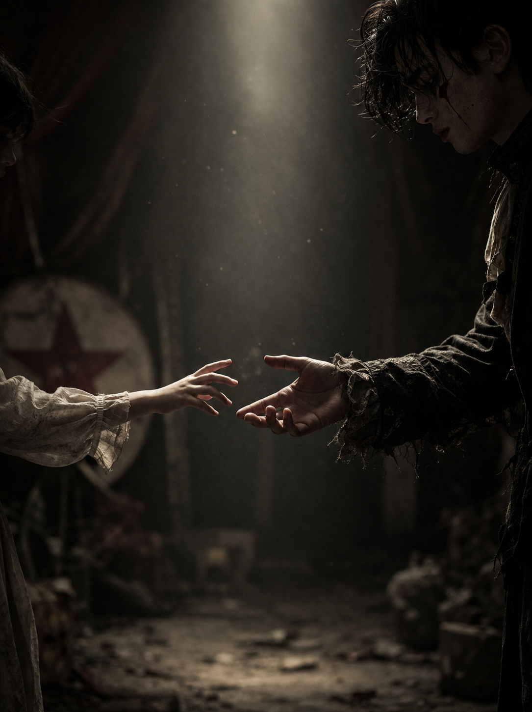
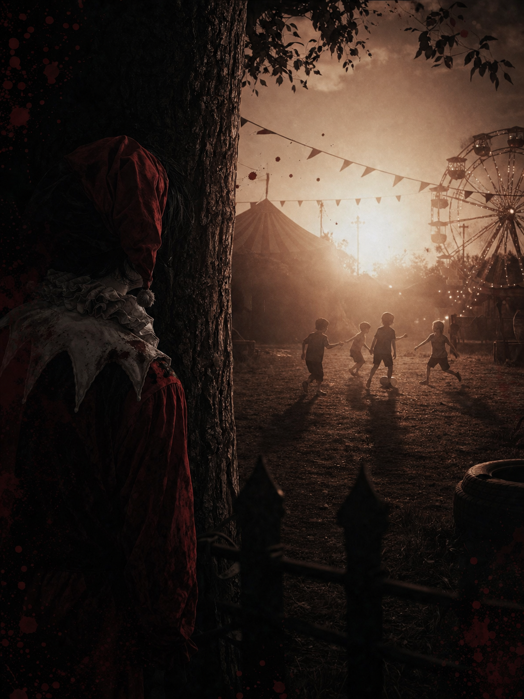
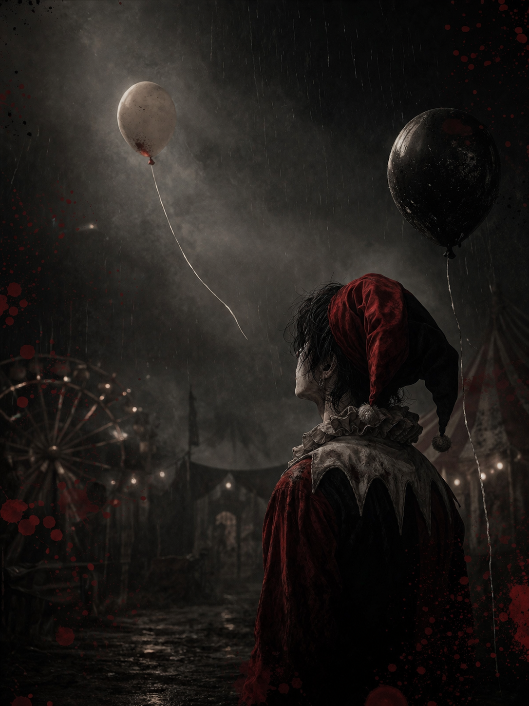

ریوزکی تاتسوزاکی، پس از مرگ مادرش، توسط پدرش در سیرک رها شد...

او احساس میکرد دنیا همان خوشبختیای را که از او دزدیده بود...

مرگ میتسوکی، نقطهای بود که همه چیز را تغییر داد...

شاید ریوزکی یک قاتل بود...
اما پیش از آن، کودکی بود که هیچوقت کسی دستش را نگرفت.